長期トレンド
JKMとJEPXシステムプライスの推移グラフ
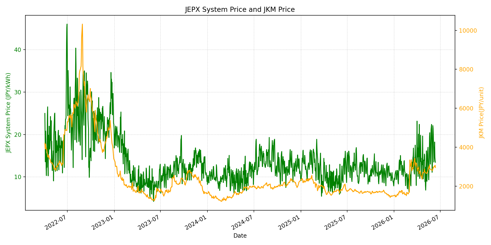
WTIの推移グラフ
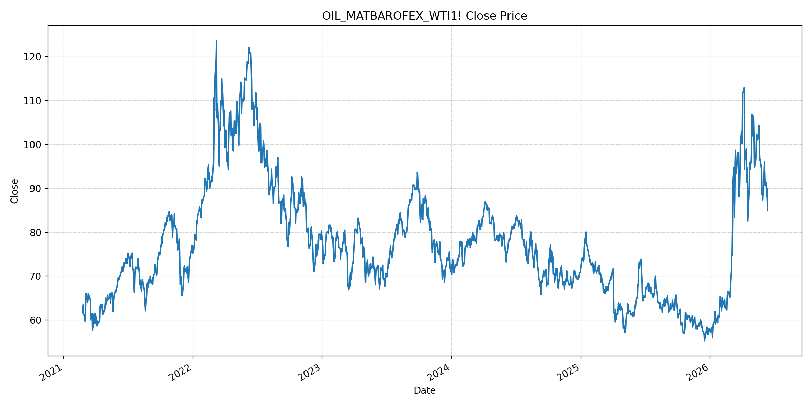
JEPXエリアプライスグラフ（直近一年分）
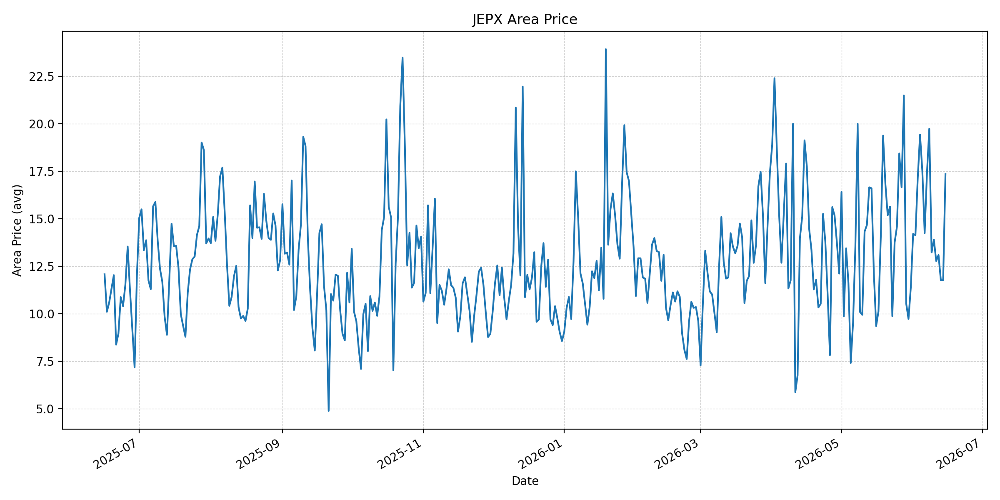
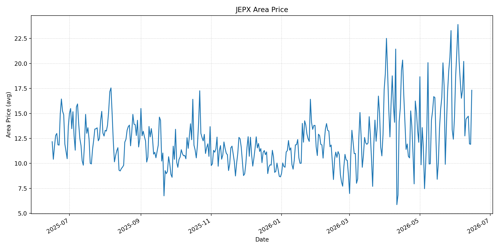
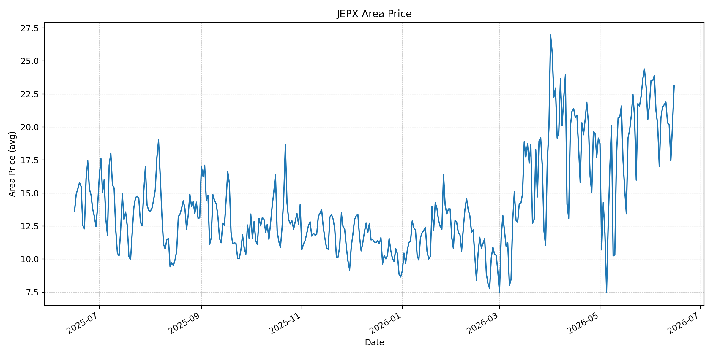
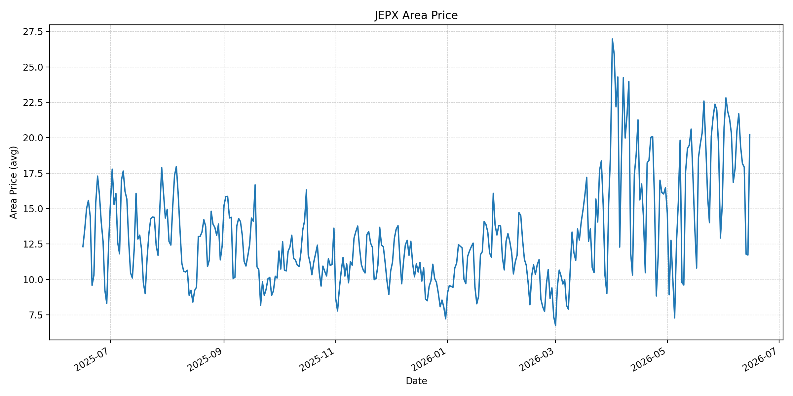
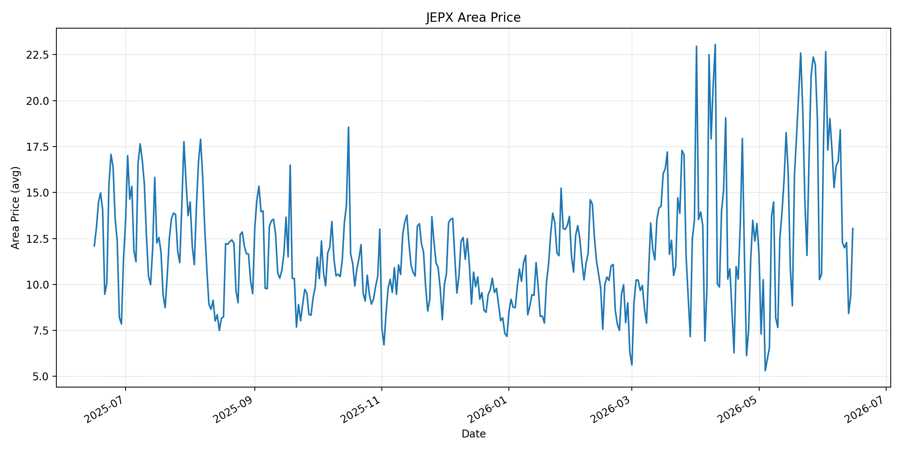
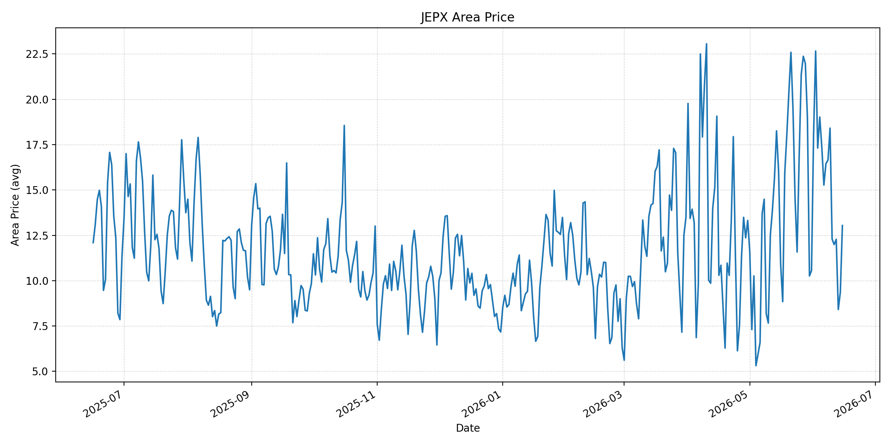
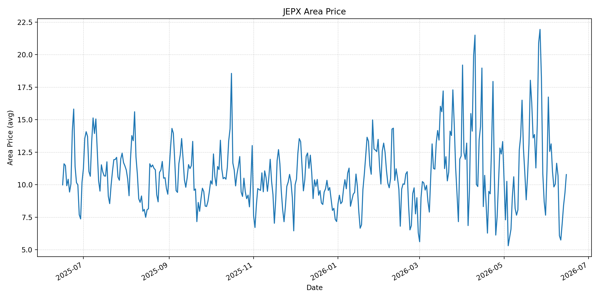
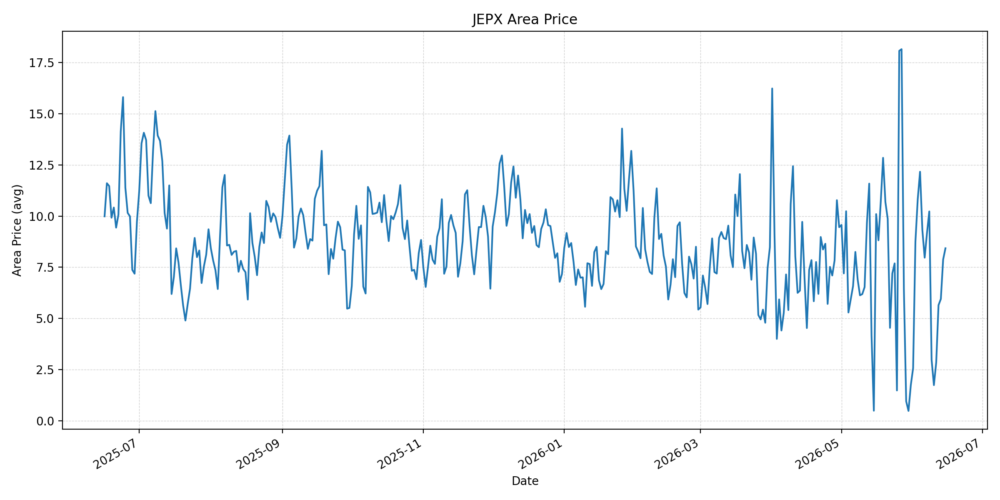
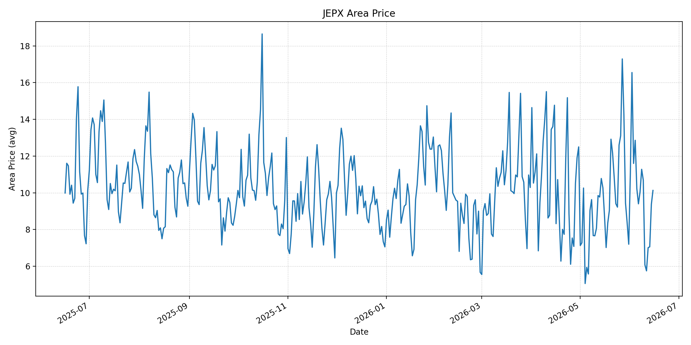
短期トレンド
JKMとJEPXシステムプライスの推移グラフ
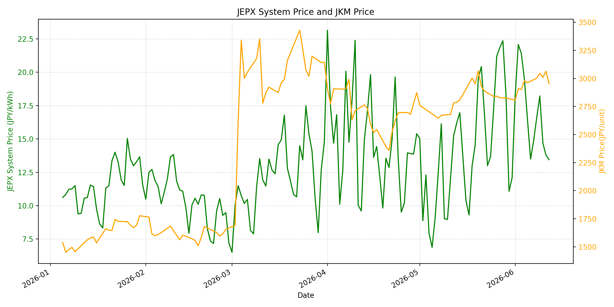
WTIの推移グラフ
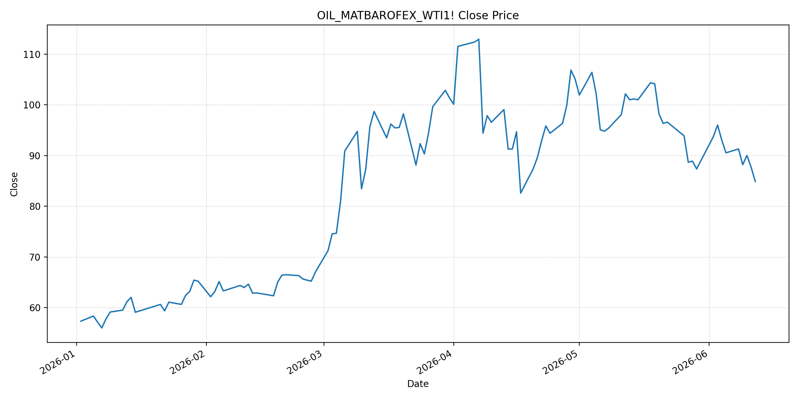
JEPXシステムプライス
JEPXは受渡日ベースの最新非空値で評価しています。最新値は 2026-06-15 分です。先週終値は 2026-06-08 時点の直近値、先月終値は 2026-05-31 時点の直近値で評価しています。
| エリア | 当日価格 | 前日価格 | 前日比（％） | 先週終値 | 先週比（％） | 先月終値 | 先月比（％） | 過去最高値 | 最高値比（％） |
|---|---|---|---|---|---|---|---|---|---|
| システム | 15.94 | 11.97 | 33.17 | 16.62 | -4.09 | 12.10 | 31.74 | 64.06 | -75.12 |
| 北海道 | 17.34 | 11.77 | 47.32 | 19.73 | -12.11 | 11.38 | 52.37 | 73.92 | -76.54 |
| 東北 | 17.32 | 11.91 | 45.42 | 20.21 | -14.30 | 14.64 | 18.31 | 84.92 | -79.60 |
| 東京 | 23.14 | 20.11 | 15.07 | 21.51 | 7.58 | 21.65 | 6.88 | 86.13 | -73.13 |
| 中部 | 20.23 | 11.72 | 72.61 | 20.48 | -1.22 | 15.25 | 32.66 | 52.06 | -61.14 |
| 北陸 | 13.04 | 9.37 | 39.17 | 16.69 | -21.87 | 10.56 | 23.48 | 46.48 | -71.95 |
| 関西 | 13.04 | 9.37 | 39.17 | 16.65 | -21.68 | 10.56 | 23.48 | 46.48 | -71.95 |
| 中国 | 10.78 | 9.37 | 15.05 | 11.65 | -7.47 | 7.66 | 40.73 | 46.48 | -76.81 |
| 四国 | 8.43 | 7.88 | 6.98 | 10.23 | -17.60 | 1.74 | 384.48 | 46.48 | -81.87 |
| 九州 | 10.13 | 9.37 | 8.11 | 11.28 | -10.20 | 7.20 | 40.69 | 40.54 | -75.01 |
LNG先物価格
最新値は 2026-06-12 の LNG(close) です。先週終値は 2026-06-05 時点の直近値、先月終値は 2026-05-29 時点の直近値で評価しています。
| 当日価格 | 前日価格 | 前日比（％） | 先週終値 | 先週比（％） | 先月終値 | 先月比（％） | 過去最高値 | 最高値比（％） |
|---|---|---|---|---|---|---|---|---|
| 2953.00 | 3065.00 | -3.65 | 2962.00 | -0.30 | 2826.00 | 4.49 | 10319.00 | -71.38 |
石油先物価格
最新値は 2026-06-12 の OIL(close) です。先週終値は 2026-06-05 時点の直近値、先月終値は 2026-05-29 時点の直近値で評価しています。
| 当日価格 | 前日価格 | 前日比（％） | 先週終値 | 先週比（％） | 先月終値 | 先月比（％） | 過去最高値 | 最高値比（％） |
|---|---|---|---|---|---|---|---|---|
| 84.88 | 87.71 | -3.23 | 90.54 | -6.25 | 87.36 | -2.84 | 123.70 | -31.38 |
ニュース
イラン情勢に関するニュース
- 2026年6月14日、APは、米国とイランが戦争終結と米海上封鎖停止で合意し、正式署名後にホルムズ海峡再開を進めると報じました。合意には完全停戦、軍事作戦停止、60日間の核協議が含まれる一方、イスラエルや米共和党内から批判も出ています。 参照: AP, 2026-06-14
- 2026年6月14日、Guardianのライブ報道は、米イラン合意を「重要な突破口」としつつ、ホルムズ再開時期や管理主体について米国発表とイラン国営メディアの説明に差があると伝えました。停戦履行はなお政治的に不安定です。 参照: The Guardian Live, 2026-06-14
ホルムズ海峡経由の石油・LNGに関するニュース
- 2026年6月14日、APは、ホルムズ再開合意後も石油・ガス供給が正常化するには数カ月かかる可能性があると報じました。保険、安全確認、滞留タンカーの退出、生産再開が必要であり、合意直後に供給が完全回復するわけではありません。 参照: AP, 2026-06-14
- Guardianは、ホルムズ海峡がイラン側の管理の下で再開される見通しと伝えています。市場は合意を受けてエネルギー供給リスクを引き下げましたが、航路の実際の安全確認と通航量の回復は今後の確認事項です。 参照: The Guardian Live, 2026-06-14
ホルムズ海峡経由でない石油・LNGに関するニュース
- 過去24時間で、日本向けの非ホルムズ新規大型調達に関する強い追加報道は確認できませんでした。直近ではKplerが、日本の2026年LNG需要見通しを64.9百万トンへ0.6百万トン引き上げ、Q2からQ3に8から10カーゴの追加需要を見込むと分析しています。 参照: Kpler, 2026年5月
- JOGMECの2026年6月8日掲載の週次では、6月1日から5日の北東アジアJKMは前週末の18ドル前半から6月5日に18ドル後半へ上昇し、米イラン和平協議停止、豪州ストライキ、天候要因が上昇材料になったと整理されています。 参照: JOGMEC, 2026-06-08
日本国内のイラン戦争に関係するニュース
- 過去24時間で、JEPX制度や国内電力市場制度を直接変更する新規の強い発表は確認できませんでした。直近の国内対策として、経済産業省は2026年5月20日に、今夏は全エリアで最低限必要な予備率3%を確保できるため節電要請は実施しないと発表しています。 参照: 経済産業省, 2026-05-20
- 同発表では、国際情勢の変化、異常気象、発電所の休廃止、火力発電所の地域集中などにより、電力需給は予断を許さないとも説明されています。国内供給力の余力は確保されていても、燃料価格の上振れは卸市場へ波及し得ます。 参照: 経済産業省, 2026-05-20
インサイト
ニュース事項による日本の電力市場への影響（短期：数日〜1週間）
- JEPXシステムプライスは 15.94 円/kWhで前日比 33.17% と反発しました。東京は 23.14、中部は 20.23 と高く、米イラン合意による燃料安期待だけでは週明けの東日本・中部価格を抑えきれていません。
- OILは 84.88 と前日比 -3.23%、先月比 -2.84% です。ホルムズ再開合意は短期の燃料心理を下げますが、APが示す供給正常化の遅れを踏まえると、数日から1週間ではタンカー通航量と保険料を確認する必要があります。
- LNGは 2953.00 と前日比 -3.65% ですが、先月比は 4.49% です。LNGの下落はJEPXの下支えを弱める材料ですが、東京・中部の価格が20円台に戻っているため、エリア需給と燃料コストを分けて判断します。
ニュース事項による日本の電力市場への影響（長期：1ヶ月〜半年）
- APが指摘する通り、ホルムズ再開合意があっても石油・ガス供給の正常化には数カ月かかる可能性があります。LNGは過去最高値比 -71.38% と低位ですが、先月比 4.49% の上昇が残る限り、夏季火力燃料費の下振れを急ぐのは危険です。
- Kplerの日本LNG需要上方修正とJOGMECのJKM上昇整理を合わせると、非ホルムズ調達も夏季需要、豪州供給リスク、船腹制約に左右されます。ホルムズ再開だけで1ヶ月から半年の卸価格リスクが消えるわけではありません。
- 経済産業省は今夏の節電要請を見送っていますが、国際情勢や火力発電所の地域集中をリスクとして明示しています。国内供給予備率が確保されても、東京 23.14 と中部 20.23 の高値継続、LNG在庫、通航正常化の実績を継続監視する局面です。